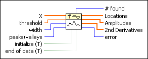
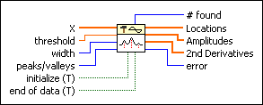

Peak Detector VI
Owning Palette: Signal Operation VIs
Requires: Full Development System
Finds the location, amplitude, and second derivative of peaks or valleys in the input signal.

 Add to the block diagram Add to the block diagram |
 Find on the palette Find on the palette |
Owning Palette: Signal Operation VIs
Requires: Full Development System
Finds the location, amplitude, and second derivative of peaks or valleys in the input signal.

| Add to the block diagram |
Find on the palette |
 |
X is the array of input values that represents the signal to be analyzed. The data can be a single array or consecutive blocks of data. Consecutive blocks of data are useful for large data arrays or for real time processing. Notice that in real time processing, peaks/valleys are not detected until approximately width/2 data points past the peak or valley. | ||||
 |
threshold instructs the VI to ignore peaks and valleys that are too small. The VI ignores peaks if the fitted amplitude is less than threshold. The VI ignores valleys if the fitted trough is greater than threshold. | ||||
 |
width specifies the number of consecutive data points to use in the quadratic least squares fit. width is coerced to a value greater than or equal to 3. The value should be no more than about 1/2 of the width of the peaks above threshold or valleys below threshold and can be much smaller (but > 2) for noise-free data. Large widths can reduce the apparent amplitude of peaks and shift the apparent location. For noisy data, this modification is unimportant since the noise obscures the actual peak. Ideally, width should be as small as possible but must be balanced against the possibility of false peak detection due to noise. | ||||
 |
peaks/valleys specifies whether the VI looks for peaks or valleys in the input signal.
|
||||
 |
initialize, when set to TRUE, specifies processing the first block of data. The VI requires some internal setup at the beginning for proper operation. If you only want to process one block of data, leave initialize unwired, or set its default state to TRUE. If you want to process consecutive blocks of data, set initialize to TRUE for the first block and FALSE for all other blocks of data. | ||||
|
end of data, when set to TRUE, specifies processing the last block of data. After processing the last block of data, the VI manages internal data. If you only want to process one block of data, leave end of data unwired, or set its default state to TRUE. If you want to process consecutive blocks of data, set end of data to FALSE for all but the last block of data. | ||||
 |
# found is the number of peaks/valleys found in the current block of data. # found is the size of the arrays Locations, Amplitudes, and 2nd Derivatives. | ||||
 |
Locations contains the index locations of all peaks or valleys detected in the current block of data. Because the peak detection algorithm uses a quadratic fit to find the peaks, it actually interpolates between the data points. Therefore, the indexes are not integers. In other words, the peaks found are not necessarily actual points in the input data but may be at fractions of an index and at amplitudes not found in the input array. To view the locations in terms of time, use the following equation. Time Locations[i] = t0 + dt*Locations[i] |
||||
|
Amplitudes contains the amplitudes of peaks or valleys found in the current block of data.
|
||||
|
2nd Derivatives gives measurements of the second derivative of the amplitude at each of the peaks or valleys found in the current block of data. 2nd Derivatives gives an approximate measure of the sharpness of each peak or valley. If you are detecting peaks, these values are all negative. If you are detecting valleys, the values are all positive.
|
||||
|
error returns any error or warning from the VI. You can wire error to the Error Cluster From Error Code VI to convert the error code or warning into an error cluster. |
The data set can be passed to the Peak Detector VI as a single array or as consecutive blocks of data.
This Peak Detector VI is based on an algorithm that fits a quadratic polynomial to sequential groups of data points. The number of data points used in the fit is specified by width.
For each peak or valley, the quadratic fit is tested against the threshold. Peaks with heights lower than the threshold or valleys with troughs higher than the threshold are ignored. Peaks and valleys are detected only after the VI processes approximately width/2 data points beyond the location of the peak or valley. This delay has implications only for real-time processing.
The Peak Detector VI must be notified when the first and last blocks are passed into the VI, so that the VI can initialize and then release data internal to the peak detection algorithm.
Refer to the following support document at ni.com for more information about peak detection using LabVIEW.
Refer to the Peak Detection and Display VI in the labview\examples\Signal Processing\Signal Operation directory for an example of using the Peak Detector VI.
 Open example Find related examples
Open example Find related examples